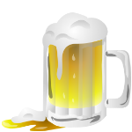
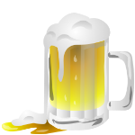

 |
uma história sobre a vodka
Como muitos já sabem, a vodca -ou vodka- é a bebida nacional da Rússia.
A história da vodka começa no início do século XIV, quando os mercadores italianos de Genova estavam cruzando as fronteiras russas. Isso era para estabelecer relações com a Russia e outros países do leste europeu. Nessa época a dinastia Ivanovich (ou Donskoy) liderava o império russo. Ele tinha a honra de receber vários presentes dos mercadores italianos. Entre esses presentes havia bebidas alcólicas (24% de álcool) feitas de uva, conhecidas como grappa.
Logo se tornou uma bebida nobre, disponível somente para o círrculo interno do czar e os oficiais da igreja.
Somente em 1533 o czar decidiu dividir a bebida com a população mais humilde e abriu a primeira Taverna Real. Lá as pessoas mais simples podiam experimentar a bebida sagrada. Somente nessa época o nome foi finalizado, derivando da palavra russa “voda“ (água), os russos inventaram a palavra “vodka“, que significa “pequena água”.
Em 1814 a vodka foi apresentada ao oeste europeu por Napoleão. Ele teve sucesso na conquista da maior parte da europa e depois da Russia. Ele foi o primeiro e único general estrangeiro que conseguiu conquistar Moscou. Devido ao inverno agressivo, seu exército perdeu a maior parte da sua força e ele foi forçado a recuar. Claro que ele trouxe alguns dos mais valiosos segredos russos de volta com ele para mostrá-los ao oeste europeu. Um deles era a fabricação da vodka.
curiosidade
Durante a 1ª e 2ª Guerra Mundial, a vodka também foi usada como antisséptico para a limpeza de feridas e de armas, além de ter sido usada como “estimulante” para os soldados soviéticos. A vodka diminui os limites morais para a luta e controla o nível de adrenalina no sangue. Bebidas alcóolicas diminuem a concentração de adrenalina no sangue, dando um maior “controle” durante as batalhas. 100ml de vodka por soldados russo era a “ração oficial” para um dia de Guerra. Cientificamente falando, 100ml de vodka contém até 250kcal. Essas calorias são justamente o suficiente para o corpo humano sobreviver para mais um dia.
fabricação
A vodca é um destilado obtido a partir da fermentação de produtos como arroz, cevada, milho, trigo, centeio, ervas, figos ou batatas. Cada uma dessas matérias primas confere à bebida sabor e qualidade diferentes, variando a fórmula de acordo com a região onde é produzida. Popularmente, a vodca tem 40% de teor alcoólico, mas a sua graduação pode variar entre os 35 e os 60% sendo acrescido de água local, o que lhe diferencia também.
O processo de fabricação da vodca é o mesmo que o do uísque, mas enquanto que este é destilado a baixas temperaturas, o que dá o sabor a cereais, a vodca é destilada a altas temperaturas e depois submetida a filtragens químicas para neutralizar os aromas dos cereais, tendo também como diferencial a água agregada à produção.
Informações retiradas do site TUDO PARA HOMENS:https://urless.in/ZWOOl
tipos de vodkas
- Ocidental – prima pela pureza e claridade, possuindo aroma neutro e um sabor de álcool limpo combinado à suavidade. As técnicas de produção levaram a uma vodca com mínimas quantidades de resíduos aromáticos e de sabor;
- Polonesa – é caracterizada pela pureza, mas cria uma vodca de sabor e aroma mais acentuados. Possui um discreto aroma adocicado e um paladar suave, onde o sabor adocicado demora a desaparecer. São ligeiramente mais oleosas;
- Russa – bebidas muito suaves de sabor marcante e agradável, marcado por uma sensação de queima depois de ingeridas.
Imagens retiradas da internet